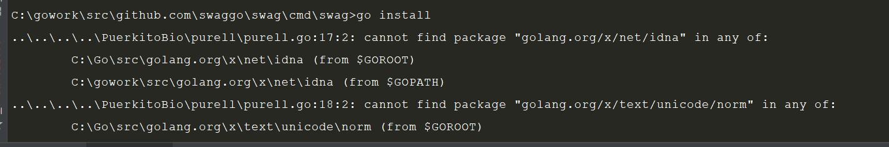

1、安装swag
在goLand中直接使用go get -u github.com/swaggo/swag/cmd/swag命令安装会报错
翻了很多博客，都没找到太合适的办法，根据博客中所写的操作还是会报错，最后用git直接下载也挺方便的，类似这种问题都可以使用此方法
此时执行swag -v命令判断是否安装成功，会返回以下错误
2、go install
进入gopath下src\github.com\swaggo\swag\cmd\swag路径执行go install命令，可能会报如下错误

此时可以按照1中的git clone方法下载所需包，但是包也可能存在于github.com目录下，如果存在此目录下只需要移动到golang.org/x目录下即可
3、初始化swag
执行完go install命令后如果没有报错出现，就可以cd到项目主目录执行swag init命令初始化swagger了
4、为功能编写swagger注解
package main
import (
_ "./docs"
"github.com/gin-gonic/gin"
"github.com/swaggo/gin-swagger"
"github.com/swaggo/gin-swagger/swaggerFiles"
"net/http"
)
// @Summary 打印测试功能
// @title Swagger Example API
// @version 0.0.1
// @description This is a sample server Petstore server.
// @BasePath /api/v1
// @Host 127.0.0.1:8080
// @Produce json
// @Param name query string true "Name"
// @Success 200 {string} json "{"code":200,"data":"name","msg":"ok"}"
// @Router / [get]
func Print(context *gin.Context) {
var (
name string
)
name = context.Query("name")
context.JSON(http.StatusOK, gin.H{
"code": http.StatusOK,
"msg": "success",
"data": name,
})
}
func main() {
var (
route *gin.Engine
v1 *gin.RouterGroup
)
route = gin.Default()
route.GET("/swagger/*any", ginSwagger.WrapHandler(swaggerFiles.Handler))
//gin.SetMode(gin.ReleaseMode)
v1 = route.Group("/api/v1")
{
v1.GET("/", Print)
}
route.Run()
}
5、生产swagger文件
swag init
{
"swagger": "2.0",
"info": {
"description": "This is a sample server Petstore server.",
"title": "Swagger Example API",
"contact": {},
"license": {},
"version": "0.0.1"
},
"host": "127.0.0.1:8080",
"basePath": "/api/v1",
"paths": {
"/": {
"get": {
"description": "This is a sample server Petstore server.",
"produces": [
"application/json"
],
"summary": "打印测试功能",
"parameters": [
{
"type": "string",
"description": "Name",
"name": "name",
"in": "query",
"required": true
}
],
"responses": {
"200": {
"description": "{\"code\":200,\"data\":\"name\",\"msg\":\"ok\"}",
"schema": {
"type": "string"
}
}
}
}
}
}
}
6、启动项目展示结果